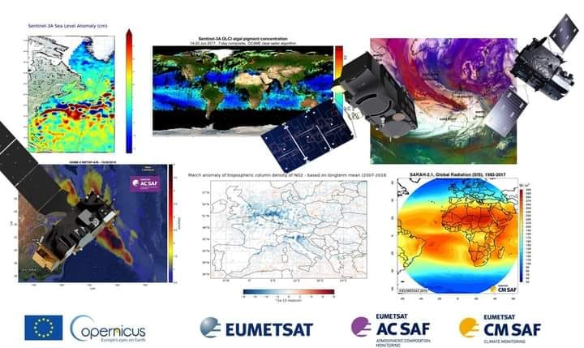

Preparing yourself for a career in oceanography is probably one of the most interesting and rewarding (yet difficult) paths to travel. The study of oceanography is typically divided into different academic disciplines (or sub-fields) of study. The four main disciplines of oceanography are:
Geological oceanography is the study of the structure of the sea floor and how the sea floor has changed through time; the creation of sea floor features; and the history of sediments deposited on it.
Chemical oceanography is the study of the chemical composition and properties of seawater; how to extract certain chemicals from seawater; and the effects of pollutants.
Physical oceanography is the study of waves, tides, and currents; the ocean-atmosphere relationship that influences weather and climate; and the transmission of light and sound in the oceans.
Biological oceanography is the study of the various oceanic life forms and their relationships to one another, adaptations to the marine environment, and developing ecologically sound methods of harvesting seafood.
Scholarship Opportunities for Oceanography Students
Local Scholarships in USA 1. Paul Valentich-Scott Oceanography Scholarship
Recipient must be a full-time student pursuing a degree in Oceanography with a class level of sophomore or higher, have financial need and a GPA of 3.0 or greater. Student will be awarded $2,500 per year.
Oliphant Scholarships in Marine Science
Intended for undergraduate or graduate students with at least two semesters remaining to complete degree requirements for graduation with a Bachelor of Science degree or a Master's degree in an area of marine science at Humboldt State University. One scholarship will be awarded to an undergraduate student and one to a graduate student. For the latest announcement and application, visit the Biological Sciences' Scholarship webpage: http://www.humboldt.edu/biosci/students/scholarships.html
2. Richard J. Guadagno Memorial Scholarships
Must be an enrolled student (min. of 6 units/semester) pursuing an undergraduate (juniors and seniors only) or graduate degree in natural resources and sciences major (including Oceanography) at Humboldt State University. Must be able to participate in scholarship orientation. One $1,000 undergraduate scholarship will be awarded.
3. Joan E. Brenson Memorial Scholarship
Applications will be evaluated based on previous academic performance and the academic record at HSU, as well as demonstrable financial eligibility. The applicant must have a major in Oceanography, Fisheries, Forestry, Environmental Science, NRPI, Rangeland Resources and Wildland Soils, Wildlife, Watershed Management, or Wastewater Utilization. Must have at least 3.0 GPA. Both undergraduate and graduate students are invited to apply. For the latest announcement and application, visit the Biological Sciences' Scholarship webpage: http://www.humboldt.edu/biosci/students/scholarships.html
Ernest P. Fusi Scholarship in Natural Resources
This $500 scholarship is intended for a full-time student pursuing an undergrad or grad degree in NR or sciences, specifically: Oceanography, Biological Sciences, Chemistry, Environmental Resources Engineering, Environmental Science, Environmental Systems, Fisheries, Forestry, Geology, NRPI, Physics/Physical Science, Rangeland Resources and Wildland Soils, Watershed Mgmt., and Wildlife Mgmt. Must have a cumulative minimum GPA of 3.0. Award is also based on financial need.For the latest announcement and application, visit the Biological Sciences' Scholarship webpage: http://www.humboldt.edu/biosci/students/scholarships.html
4. Cornelius Henry Siemens Scholarship
Student in the College of Sciences. Must have financial need and at least a 3.00 GPA. Evaluation is based in part on financial need. All students who complete a FAFSA with Humboldt State University by the deadline will automatically be considered for this scholarship. No other application is required.
5. Nichols Family Scholarship
Two awards of $500 each will be given to graduates of a Humboldt County High School who demonstrate financial need. Recipients must be attending a 4-year accredited college, university or graduate school full-time within the U.S., studying teaching, medicine, science or engineering. Awardees must have a minimum 3.5 high school GPA or 3.0 college GPA.
6. Hun Kwan Goh Memorial Scholarship
Two or three scholarships totaling $2000 will be awarded to Asian or part Asian Humboldt County students. Awardees must have a minimum 3.3 GPA intending to study at an accredited 4-year college or university. Application must include SAT test scores, a description or any science or art project in which the applicant has participated and proof of Asian heritage.
Donald A. & Inez H. Carranza Scholarship
Two $1,500 scholarships will be awarded to Humboldt or Del Norte County high school graduates entering their first year of college. Recipients must attend an accredited college, university, technical or trade school within the U.S. and must study teaching and/or the sciences. Financial need will be considered. If the awardee maintains a 2.5 GPA (on a 4.0 scale) in their studies at college, an additional $2,000 will be provided each year for 3 years, thus the total value of the scholarship is $7,500 if minimums are maintained.
7. National Scholarships
Ernest F. Hollings Scholarship Program/National Oceanic and Atmospheric Administration
Majoring in a discipline area related to oceanic and atmospheric science, research, technology, and education, and supportive of the purposes of NOAA's programs and mission, e.g., biological, life, and agricultural sciences; physical sciences; mathematics; engineering; computer and information sciences; social and behavioral sciences; and teacher education. Applicants must be have U.S. citizenship. Must be a full-time junior academic status in Fall 2011 in an accredited college or university within the United States or U.S. territories. More information can be obtained at the NOAA website: http://www.oesd.noaa.gov/Hollings_info.html
8. The MTS Student Scholarship for Graduate and Undergraduate Students
Undergraduates and graduate students enrolled full time in a marine-related field; $2000. (Open to MST student members; could be worthwhile joining!) More information can be obtained at the Marine Technology Society website: https://www.mtsociety.org/education/scholarships.aspx
The MTS Student Scholarship for Graduating High School Seniors
High school seniors who have been accepted into a full-time undergraduate program; $2000. (Open to MST student members; could be worthwhile joining!) More information can be obtained at the Marine Technology Society website: https://www.mtsociety.org/education/scholarships.aspx
The Paros-Digiquartz Scholarship
Students with an interest in marine instrumentation; undergraduates and graduate students enrolled full time in an academic institution; high school seniors who have been accepted into a full-time undergraduate program. $2000.
9. ROV Scholarship
Students interested in remotely operated vehicles (ROVs) or underwater work that furthers the use of ROVs; graduates and undergraduates who are MTS student members; high school students. Up to $10,000. More information can be obtained at the Marine Technology Society website: https://www.mtsociety.org/education/scholarships.aspx
Charles H. Bussmann Undergraduate Scholarship
Undergraduate students enrolled full time in a marine-related field. Intended for Marine Technology student members. More information can be obtained at the Marine Technology Society website: https://www.mtsociety.org/education/scholarships.aspx
10 . John C. Bajus Scholarship
MTS student members; undergraduates and graduate students enrolled full time in a marine-related field; those who have shown a commitment to community service and/or volunteer activities. More information can be obtained at the Marine Technology Society website: https://www.mtsociety.org/education/scholarships.aspx
Thomas Pratte Memorial Scholarships
Applications are invited from upper level undergraduates, Masters and Ph.D. level students from a wide range of fields, including, but not limited to: oceanography, marine affairs, environmental sciences, public policy, community planning and natural resources. All applicants should demonstrate exceptional commitment to academic pursuits, work and/or research in an area consistent with the Surfrider Foundation Mission and Guiding Principles (http://www.surfrider.org). Three merit based awards will be made to students who are members in good standing of the Surfrider Foundation; one for $2000 at the Undergraduate level, one for $3000 at the Masters level, and one for $5000 at the Ph.D. level, annually, based upon available funds. The scholarship is managed by the Ocean Foundation. Visit the Ocean Foundation's webpage (http://www.oceanfdn.org), scroll to "TOF Highlights", then "Surfrider Foundation Scholarship" for more information.
11. Barry M. Goldwater Scholarship
Scholarships supporting students who have outstanding potential and intend to pursue careers in mathematics, the natural sciences, or engineering. Intended for college juniors who will be seniors next academic year. Four-year institutions like HSU are eligible to nominate up to four students who are in the sophomore or junior class during the current academic year. Each scholarship covers eligible expenses for tuition, fees, books, and room and board, up to a maximum of $7,500 annually. Visit the official webpage for more information: http://www.act.org/goldwater/
12. Hispanic Explorers Scholarships
For students pursuing a science, computer science, engineering or NASA-related major. Must be a US citizen of Hispanic background residing in the fifty states or Puerto Rico. Must be a full-time undergraduate student in the 2011-2012 academic year. Must be in good academic standing with a minium 3.0 GPA.
EUMETSAT Training Course - Using the Copernicus Marine Data Stream for Ocean Applications: 28 September - 23 October 2020, link: https://training.eumetsat.int/course/view.php?id=158
If you're interested in learning more about the #weather, #oceanography, #AirQuality or #climate, visit training page for full details and registration - courses begin in September 2020: https://bit.ly/2YhyD9H

Recommended online courses for students of Physical Oceanography